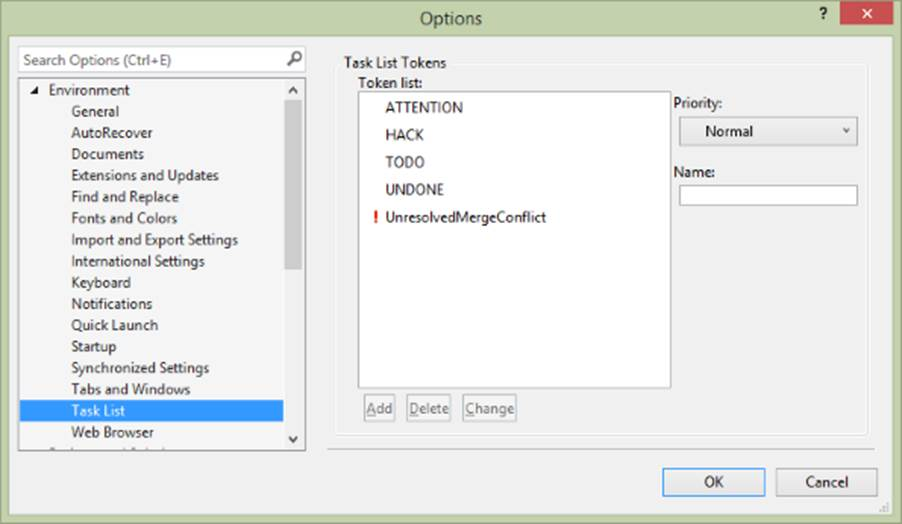
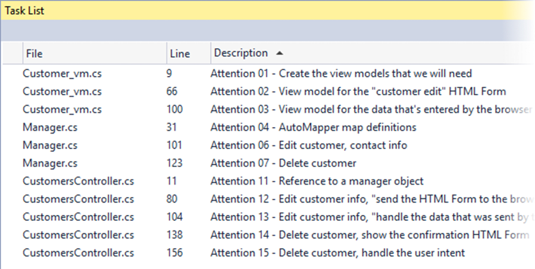
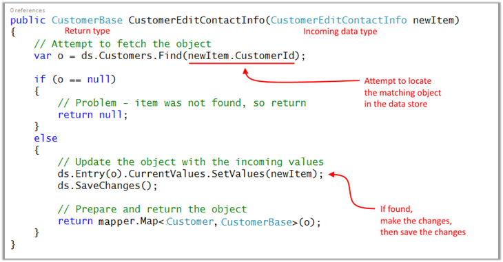
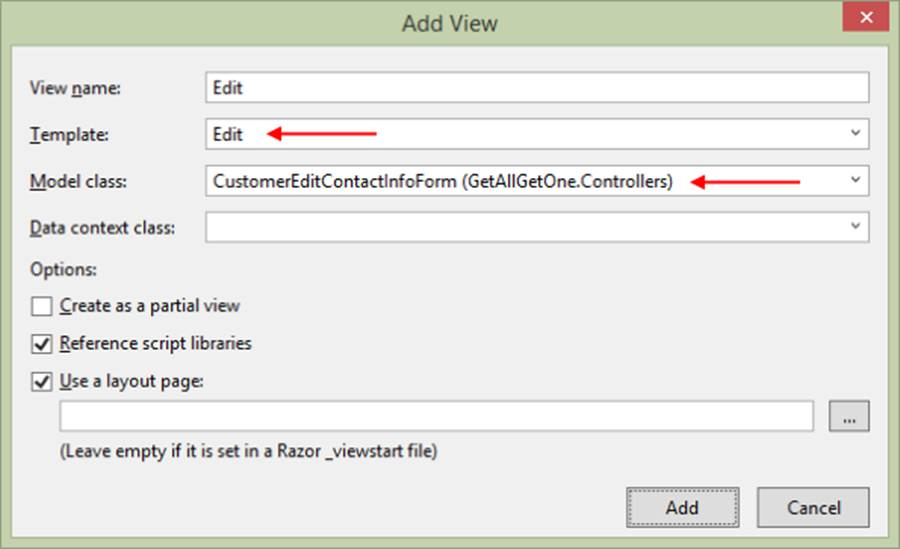
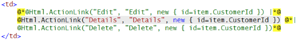
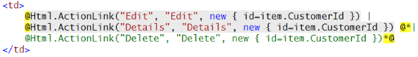
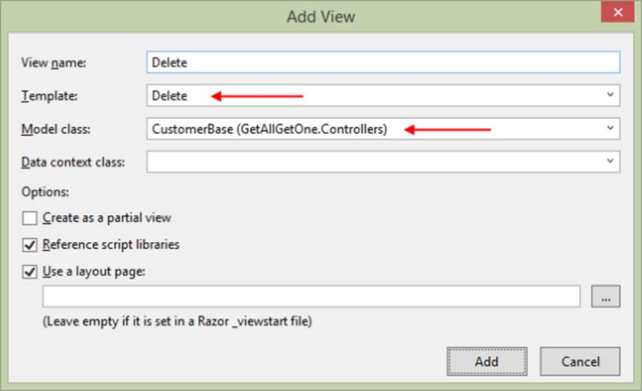
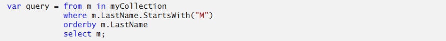
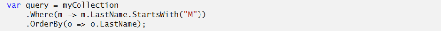

INT422 – Lecture 3
Learn the Edit and Delete patterns. Introductions to data annotations, and to LINQ (language-integrated query).
Test today
Test 2 is today.
We will have the test at the beginning of the timeslot, and will run approximately 18 minutes.
As you have learned, all tests in this course are hand-written. Pen or pencil. Answer styles will vary, but we’re mostly looking for short- to medium-length answers, and/or diagrams, and so on. No references or resources are permitted – “closed book, open brain”.
The tested topics are mostly forward-looking. You will be tested on comprehension, understanding, and the application of the current week’s topics. It is possible that you may be tested on a recently-covered topic, which enables you to show that you have the foundational knowledge needed for current and future tasks.
Textbook coverage
As announced last week, the textbook will have a supporting role as you learn new topics from these notes and your classroom sessions. Use the table-of-contents and the index to locate the topic, and then read about it there. A reminder: The textbook does not use view model classes in its discussions and code examples. We do.
Code examples
Using a persistent store – edit existing, delete item
Introduction to data annotations
Introduction to LINQ
❝Reminder about the code examples:
All code examples are designed to be usable immediately and error-free. Each should compile and execute correctly.
If you have any problems with a code example, please contact your professor.
Look for and use this feature in the code examples
Your teacher team has added “comment tokens” to the code examples. We do this to highlight areas of the code that need your attention (and review and thought).
As you will learn in the linked article, Visual Studio has a built-in token named “TODO”. In your Visual Studio, you will add a custom token named “ATTENTION”. This is a one-time operation on your own computer.
Open Tools > Options. Navigate to the Environment > Task List panel. Enter “ATTENTION” into the “Name:” textbox, and click the “Add” button. It will add it to the “Token list:”.

Then, when you show your Task List (from the View menu), it will show you a nice list of tokenized comments.
Tip: Sort by “Description”, and you can go through the list in the sequence that the author intended.

Each item on the list can be double-clicked. When you do that, the source code file will open, and it will scroll to the position of the comment.
Enjoy.
Theme for today
Last week, you learned these patterns, when working on a single entity:
Today, we’ll finish off by covering these patterns:
Then, we’ll cover some new foundational topics, data annotations, and LINQ.
Adding more functionality – “edit existing”
Like “add new”, this pattern is implemented with two controller methods, and one manager method.
❝Notice:
ALL use cases that involve data add, change, or delete, will be implemented with TWO controller methods.
The GET method will handle the “show me the HTML Form to do add/change/delete” task.
The POST method will handle the data that the user sends/submits for add/change/delete.
A successful result will ALWAYS use the PRG pattern (post-redirect-get).
The code example continues to use the customer entity, as we did in last week’s code examples.
For this use case, we must deliver an HTML Form to the browser user.
Then, we must accept the posted data, and process it (by editing the customer object’s data).
To preview our work, the controller method will call a manager method, which does the edit-and-save work. The updated object is then returned to the controller, for final processing.
There are several tasks in the work plan. Here’s a list. Details follow.
Create a view model
We already have some view models, CustomerBase, and CustomerAdd.
Can we use these for the “edit existing” use case?
NO.
CustomerAdd simply will not work, because it does not have an identifier property.
❝Note: For “edit existing” and “delete item” use cases, we MUST have and use the identifier property.
CustomerBase could work, for very simple objects, but it would be unusual to do so. Why?
From a common sense perspective, we do not usually permit someone to edit all the properties of an existing object in one task. Instead, we focus on the editing (some properties) task that makes sense for the use case. That means that we need another view model class, to exactly match the shape of the editable object.
❝Pause for a moment, and make sure that you understand this concept.
In the code example, we have decided that we will permit the editing of contact info – phone, fax, and email – for a specific customer. The view model class will need these properties.
What else? From above, you know that we MUST include the identifier property.
Is that enough? If we show an HTML Form with the phone, fax, and email properties, will the browser user see enough to know which customer is being edited?
No.
In the view model class, we must also include human-readable and contextually-logical information. For the customer, it seems obvious that we need the customer’s name. However, we do NOT want to allow editing of the customer’s name.
Don’t worry about this conflict, because we have a strategy. After Visual Studio has scaffolded the view, we will simply edit the view, and remove the ability to edit the customer name.
Let’s create the view model class. What name should we use? Well, it will enable the browser user to edit the contact info for a customer, in an HTML Form. Its name will be CustomerEditContactInfoForm. Here are its properties (we have removed the data annotations to focus only on the properties):
public class
CustomerEditContactInfoForm
{
public
CustomerEditContactInfoForm() { }
[Key]
public
int CustomerId { get;
set; }
public
string FirstName { get;
set; }
public
string LastName { get;
set; }
public
string Company { get;
set; }
public
string Phone { get;
set; }
public
string Fax { get;
set; }
public
string Email { get;
set; }
}
This approach does introduce another problem: The shape of the object that is sent to the view will be different than the shape of the object that is posted by the browser user from the HTML Form. In other words:
To the browser: 7 properties (CustomerId, FirstName, LastName, Company, Phone, Fax, Email)
Posted from the HTML Form: 4 properties (CustomerId, Phone, Fax, Email)
The solution? Simply create another view model class, with the four properties, to describe the shape of the object that is posted by the browser user from the HTML Form. For example:
public class CustomerEditContactInfo
{
public CustomerEditContactInfo()
{ }
[Key]
public int CustomerId { get; set; }
public string Phone { get; set; }
public string Fax { get; set; }
public string Email { get; set; }
}
❝Could we use inheritance here? Make CustomerEditContactInfoForm inherit from CustomerEditContactInfo? Yes, you could. Should you always try to do this? No, only when it’s easy to do, and appropriate.
Create a mapper
In the controller method (below), we will fetch the object-to-be-edited from the data store. The fetch task will re-use the “get one” method in the manager object. The returned object will be a CustomerBase data type.
We will need a new mapping, from a view model CustomerBase class, to a view model CustomerEditContactInfoForm class. Add it now.
Do we need another mapping, from CustomerEditContactInfo to Customer ?
Interestingly, the answer is “no”. Instead, we will use a different mapping technique to do this, explained next.
In the Manager, create an “edit existing” method
This method will update an existing object, and save the changes to the data store. The method signature needs:
Here’s the method’s algorithm:
In the method body, our first task is to attempt to locate the object that is being edited.
If not found, return null (to the controller).
Otherwise, make the changes, and then save the changes.
Finally, return the freshly-edited object back to the controller.
Here’s a typical “edit existing” method. Click to open the image full-size in a new tab/window.

ds.Entry(o).CurrentValues.SetValues(newItem);
How does this statement work?
This is an amazing piece of work. Let’s start at the beginning. That way, you will begin to learn how to read the MSDN documentation.
ds.Entry(o)
This returns an object which provides access to information about, and control of, an entity (o in this situation) that is in the data context in-memory temporary workspace. Here’s the MSDN document.
CurrentValues
The ds.Entry object has a CurrentValues property, which gets the current values for the entity’s properties, as a collection of DbPropertyValues. Here’s its MSDN document.
SetValues(newItem);
The CurrentValues property has a SetValues() method. This sets (changes) the CurrentValues items to those in a passed-in object (newItem). From its MSDN document:
The
[passed-in] object can be of any type.
Any property on the [passed-in] object with a name that matches a property name
in the [data store object] and can be read will be read.
Other properties will be ignored.
Also, it ignores navigation properties. All in all, it is a very safe way to make changes to objects. We will use this for “edit existing” tasks, and maybe other kinds of tasks.
In the controller, modify the first Edit() method
As you have learned, we ALWAYS use two methods for “add new”, “edit existing”, and “delete item” in ASP.NET MVC web apps.
The first method responds to HTTP GET. Its job is to prepare the data that’s needed for an HTML Form, and pass the data to the view, which appears in the user’s browser.
The other method responds to HTTP POST, when the user submits the HTML Form. Its job is to validate the incoming data, process it, and handle the result.
First Edit() method, for HTTP GET
Its job is to prepare the data that’s needed for an HTML Form, and pass the data to the view, which appears in the user’s browser.
What data do we need for the form? Enough to enable the browser user to know the context or environment for the work to be done, and the editable properties.
Notice the signature of the scaffolded Edit() method. It has an int argument, for the object identifier. Similar to the scaffolded Details() method.
This is a best practice – we must get a reference to the object-to-be-edited, and the most reliable reference is its unique identifier. You may have noticed that the scaffolder for the “List” and “Details” views automatically creates an “Edit” link that includes the unique identifier in the URL.
To continue, we will use the passed-in object identifier, and fetch the desired object.
If not found, return “not found”.
Otherwise, create a view model object that will be used in the view to create the HTML Form. Above, we created the CustomerEditContactInfoForm view model class. We will map the source CustomerBase object to this new “form” object.
Then, pass it to the view.
// GET: Customers/Edit/5
public ActionResult
Edit(int? id)
{
//
Attempt to fetch the matching object
var o =
m.CustomerGetById(id.GetValueOrDefault());
if (o == null)
{
return HttpNotFound();
}
else
{
//
Create and configure an "edit form"
// Notice
that o is a CustomerBase object
// We must
map it to a CustomerEditContactInfoForm object
// Notice
that we can use AutoMapper anywhere,
// and not
just in the Manager class!
var editForm = m.mapper.Map<CustomerBase, CustomerEditContactInfoForm>(o);
return View(editForm);
}
}
Create an “edit existing” view, using the scaffolder
Create the “edit existing” view. Complete the dialog as shown below:

Before testing, you may have to fix the two existing customer views – list and details. Why? We may have removed (or commented out) the “Edit” links on those views. The code example commented out the list view’s “Edit” and “Delete” links:

Un-comment (or re-enter if you deleted) the “Edit link:

In the controller, modify the
other Edit() method, to call
the manager “edit existing” method, and handle the result
The job of this method is to validate the incoming data, process it, and handle the result.
As we did for the Create() method that handled HTTP POST, we will change the FormCollection argument, so that we can take advantage of strong typing, and therefore model binding and validation.
public ActionResult
Edit(int? id, CustomerEditContactInfo
newItem)
Next, we must do two data integrity checks, in sequence:
The first check is done with the same kind of logic that was used in the “add new” situation. Simply check whether model state is valid.
If this test fails, then we must display the HTML Form again. To keep the code simple, and the concept clear, we will simply re-display the HTML Form. Later, we will learn a better and more complete way of handling this situation.
The second check compares the identifier in the URL, and checks whether it matches the identifier that’s inside the package of data that was sent by the browser user.
If this test fails, then the data (sent by the browser user) was tampered with, so we should redirect, to the list-of-customers view.
When both tests pass…
If both tests pass, then we can attempt to do the update. Call the method in the manager object.
If that returns null, then there was a problem with the data, so our initial approach (like above) will be to simply re-display the HTML Form. Later, we will learn a better and more comlete way of handling this situation.
Alternatively, if the update succeeds, then we should redirect to the “Details” view, so that the user can see and visually confirm that the edit was done correctly.
Here’s the code for the method:
// POST: Customers/Edit/5
[HttpPost]
public ActionResult Edit(int? id, CustomerEditContactInfo newItem)
{
// Validate the input
if (!ModelState.IsValid)
{
// Our "version 1" approach is to display the "edit form" again
return RedirectToAction("edit", new { id = newItem.CustomerId });
}
if (id.GetValueOrDefault() != newItem.CustomerId)
{
// This appears to be data tampering, so redirect the user away
return RedirectToAction("index");
}
// Attempt to do the update
var editedItem = m.CustomerEditContactInfo(newItem);
if (editedItem == null)
{
// There was a problem updating the object
// Our "version 1" approach is to display the "edit form" again
return RedirectToAction("edit", new { id = newItem.CustomerId });
}
else
{
// Show the details view, which will show the updated data
return RedirectToAction("details", new { id = newItem.CustomerId });
}
}
Adding more functionality – “delete existing”
Like “add new” and “edit existing”, this pattern is implemented with two controller methods, and one manager method. The code example continues to use the customer entity.
For this use case, we must deliver an HTML Form to the browser user.
The HTML Form will show the browser user some information about the item-to-be-deleted, and give them an opportunity to confirm the delete request (or navigate away).
If the user confirms the delete intention, then we must accept the posted data, and process it.
To preview our work, the controller method will call a manager method, which does the delete-item work.
There are several tasks in the work plan. Here’s a list. Details follow.
In the Manager, create an “delete item” method
This will be a simple method. It needs an argument – the object identifier.
Should it return a result? That’s debateable. In this course, we will use a bool return result. The value “true” will mean that yes, the item was deleted.
The method’s logic is straightforward. First, attempt to fetch the item to be deleted.
If not found, return false.
Otherwise, call the Remove() method on the collection, and then SaveChanges(). Return “true” from the method. Here’s the method’s code:
public bool CustomerDelete(int id)
{
// Attempt to fetch the object to be deleted
var itemToDelete = ds.Customers.Find(id);
if (itemToDelete == null)
{
return false;
}
else
{
// Remove the object
ds.Customers.Remove(itemToDelete);
ds.SaveChanges();
return true;
}
}
In the controller, modify the first Delete() method
As you have learned, we ALWAYS use two methods for “add new”, “edit existing”, and “delete item” in ASP.NET MVC web apps.
The first method responds to HTTP GET. Its job is to prepare the data that’s needed for an HTML Form, and pass the data to the view, which appears in the user’s browser.
The other method responds to HTTP POST, when the user submits the HTML Form. Its job is to validate the incoming data, process it, and handle the result.
First Delete() method, for HTTP GET
Its job is to prepare the data that’s needed for an HTML Form, and pass the data to the view, which appears in the user’s browser.
What data do we need for the form? Enough to enable the browser user to know the context or environment for the work to be done.
Notice the signature of the scaffolded Delete() method. It has an int argument, for the object identifier. Similar to the scaffolded Details() method.
This is a best practice – we must get a reference to the object-to-be-deleted, and the most reliable reference is its unique identifier. You may have noticed that the scaffolder for the “List” view automatically creates an “Delete” link that includes the unique identifier in the URL.
To continue, we will use the passed-in object identifier, and fetch the desired object.
If not found, redirect back to the list. Why? We don’t want to give the browser user information that would enable them to “guess” which objects exist, and which do not.
Otherwise, we can pass the fetched CustomerBase object to the view.
// GET: Customers/Delete/5
public ActionResult Delete(int? id)
{
var itemToDelete = m.CustomerGetById(id.GetValueOrDefault());
if (itemToDelete == null)
{
// Don't leak info about the delete attempt
// Simply redirect
return RedirectToAction("index");
}
else
{
return View(itemToDelete);
}
}
Create an “delete item” view, using the scaffolder
Create the “delete item” view. Complete the dialog as shown below:

Before testing, you may have to fix the existing list-of-customers view. Why? We may have removed (or commented out) the “Delete” links on that view.
The job of this method is to validate the incoming data, process it, and handle the result.
The incoming data package is effectively empty. We don’t need any data from the user to handle a delete request. The object identifier is in the URL. Confirm this by studying the view and the rendered HTML Form.
The controller method will call the manager method, and pass the object identifier as the argument.
Effectively, we don’t care what the return result is – true or false – because the result will not trigger any further processing. At the end, we will just redirect to the list-of-customers.
The method code:
// POST: Customers/Delete/5
[HttpPost]
public ActionResult Delete(int? id, FormCollection collection)
{
var result = m.CustomerDelete(id.GetValueOrDefault());
// "result" will be true or false
// We probably won't do much with the result, because
// we don't want to leak info about the delete attempt
// In the end, we should just redirect to the list view
return RedirectToAction("index");
}
Data annotations are descriptive text attributes that we add to properties in a class. A data annotation is located just before/above the property declaration.
❝Textbook coverage: Chapter 6.
You can skim the section titled “CUSTOM VALIDATION LOGIC”.
Data annotations can help with:
Some data annotations are intended only for design model classes, while others are for use with view model classes. And, some work with both.
Their overall benefit is to reduce the amount of code that has to be written to handle typical data management scenarios.
❝Please note that data annotations DO NOT replace the need to validate data against business rules and/or application logic. You still need to do that. Data annotations help most by improving the quality of input data, so that it can then be inspected for its integrity and appropriateness.
.
Open the “DataAnnotations” code example, and study it as you go through this topic. We will also build some examples in class.
❝Note: The Google Chrome browser does a good job of rendering the <input> fields. Some IE and Firefox versions do not offer the same support, unless you use a polyfill.
.
In your design model classes source code file, add a using directive for this namespace:
using System.ComponentModel.DataAnnotations;
Useful data annotations for design model classes include:
[Required] (implemented as NOT NULL in the database, for data and for relations)
[StringLength(n)] (implemented as a specific varchar/nvarchar value in the database)
There are few others that you may use occasionally. One of them:
[Key] (use this if the primary key is something other than Id or <entity-name>Id)
You can comma-separate multiple data annotations.
In design model classes, value types (e.g. int, double) CANNOT use the [Required] attribute.
Do you need a default value for a property? A data annotation will not help.
Instead, as you have learned, simply create a class constructor, and set the property’s default value there.
.
In your view model classes source code files, add a using directive for this namespace:
using System.ComponentModel.DataAnnotations;
Useful data annotations for view model classes include:
[Required] (same reason as above)
[StringLength(n)] or [StringLength(n, MinimumLength = m)] (ditto above)
[Key] (ditto above)
[Range(min, max)] (int or double types)
[Display(Name=”Improved property display name”)]
[DataType(DataType.Password)] (others include EmailAddress, Url, Currency, Date, Time, and MultilineText)
[RegularExpression(“regex”)] (a regular expression; omit the ^ and $ delimiters, because they’re assumed)
In a regular expression, sometimes you need the backslash character (e.g. \d). In a .NET Framework string, the backslash is a quote character. So, you either precede the entire string with an at sign (@), or use a double backslash (\\d).
Common situations:
[0-9]+ – digits only
[a-zA-Z]+ – letters only
[0-9a-zA-Z]+ – digits and letters only
[Compare(“PropertyName”)] (often used for password entry; compares this field’s value with the value in PropertyName)
[HiddenInput] (rendered as <input type=hidden…, often used for an object’s identifier that will not be shown to the browser user)
[Editable(false)] (not rendered)
[ReadOnly(true)] (not rendered) (in System.ComponentModel namespace)
[ScaffoldColumn(false)] (not rendered)
As before, you can comma-separate multiple data annotations.
In view model classes, value types (e.g. int, double) CANNOT use the [Required] attribute, but the [Range(min, max)] attribute effectively solves that problem.
.
Custom error messages
All attributes accept a parameter named “ErrorMessage”. The value is a custom error message for the user. For example:
[Range(2, 6, ErrorMessage=”Selected gizmos must range from 2 to 6″)]
LINQ – Language INtegrated Query – is a C# language feature that supports in-language operations on data collections which are located in memory. The operations include the full range of query, add, change, and remove.
❝This is super important:
LINQ works with data collections which are located in memory.
In our web apps, we most often use the query operation. We use LINQ for:
Open the “LINQIntroduction” code example, and study it as you go through this topic. We will also build some examples in class.
Querying
When querying, we use a query expression. We can use either one of two syntax forms:
.
“Standard” query expression syntax
For those familiar with relational database querying, the LINQ query expression syntax will appear familiar. A typical standard query expression consists of these parts:
from …
where …
orderby …
select …
So, a typical standard query expression looks like this:

.
In the “from” clause, “m” is known as a local range variable, which represents the items in the data source during the query. A local range variable can be one character, or it can be two or more characters.
.
“Method-based” (fluent) query expression syntax
Method-based (fluent) syntax uses methods, and method chains, to do the work. The example from above would look like this:
.
For readability, we can also use multiple lines, if you split your lines before the dot:

.
Note that many of the methods require a code expression; which is a function. The function could extract, filter, or project – the developer decides its behaviour.
The function syntax is known as a lambda expression in C#. (It is often referred to as an inline method. More generically, it is known as an anonymous function.) The syntax below shows a lambda expression that returns an entity object that matches a specific condition:
c => c.CustomerID == 23
The return type is inferred from the context in which it is used. In other words, if the lambda expression is used as an argument to a LINQ statement that is supposed to return an entity object, then the return type of the lambda expression above is the entity object type.
Anonymous functions can “see” the local variables in the surrounding methods. Repeating the example syntax above, assume that the method that surrounds the lambda expression includes a local variable named “custID”, and the variable held the value “23”. The new syntax would be:
c => c.CustomerID == custID
❝Note that if there is already a local variable named “c” in the surrounding methods, you must use a different local range variable.
How do you read or pronounce this syntax? As suggested by Hejlsberg and others (see this StackOverflow article), it can be read as any one of the following:
c such that c.CustomerID is equal to custID
c becomes (the result of) c.CustomerID equals custID
c for which c.CustomerID is equal to custID
c maps to c.CustomerID equals custID
c lambda of c.CustomerID is equal to custID
.
For more examples, study the “Getting started…” section of the LINQ article by Hejlsberg and Box (linked below).
To learn a bit more about LINQ, study this document: LINQ: .NET Language Integrated Query, by Anders Hejlsberg and Don Box
Be sure to read at least these sections:
{kind=link}
{kind=link}
{kind=link}